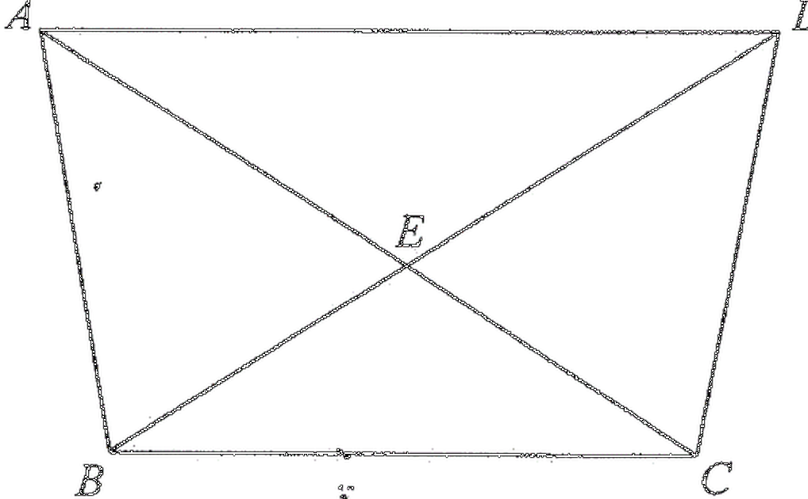

QUESTION The Full Problem
In Figure 1, \(ABCD\) is a quadrilateral. The diagonals \(AC\) and \(BD\) intersect at \(E\). It is given that \(BE = CE\) and \(\angle BAC = \angle BDC\).
(a) Prove that \(\triangle ABC \cong \triangle DCB\). (2 marks)
(b) Consider the triangles in Figure 1.
(i) How many pairs of congruent triangles are there?
(ii) How many pairs of similar triangles are there? (4 marks)
Original Figure

PART (a) Prove \(\triangle ABC \cong \triangle DCB\)
Move the sliders to drag the vertices \(A\) and \(D\). Notice that \(BE=CE\) always stays true when \(\angle BAC=\angle BDC\) — this is the key structural fact the proof exploits.
Since \(BE = CE\), triangle \(BEC\) is an isosceles triangle with vertex \(E\). Therefore its base angles at \(B\) and \(C\) are equal:
\[ \angle BCE = \angle CBE \quad (\text{base } \angle\text{s, isos. } \triangle) \]The question gives us a second pair of equal angles:
\[ \angle BAC = \angle BDC \quad (\text{given}) \]And \(BC\) is a side shared by both triangles:
\[ BC = BC \quad (\text{common side}) \]Matching corresponding vertices carefully — \(B \leftrightarrow C\), \(C \leftrightarrow B\), \(A \leftrightarrow D\):
\[ \left.\begin{aligned}\angle BCE &= \angle CBE\\ \angle BAC &= \angle BDC\\ BC &= BC\end{aligned}\right\}\Rightarrow \triangle ABC \cong \triangle DCB \quad (\text{AAS}) \]PART (b)(i) Number of Pairs of Congruent Triangles
Toggle each candidate pair below and watch the two triangles being compared. A pair is congruent only if one can be rigidly moved onto the other (same shape and same size).
From part (a) we already have one congruent pair:
\[ \triangle ABC \cong \triangle DCB \]Using \(\triangle ABC \cong \triangle DCB\), corresponding parts are equal:
\[ AB = DC, \quad AC = DB, \quad \angle ABE = \angle DCE,\ \angle BAE = \angle CDE \]Subtracting the shared segment from equal diagonals: since \(AC = DB\) and \(BE = CE\) (given),
\[ AE = AC - CE = DB - BE = DE \]Also \(BE = CE\) (given) and \(\angle AEB = \angle DEC\) (vertically opposite angles). Hence
\[ \triangle ABE \cong \triangle DCE \quad (\text{SAS}) \]Similarly, \(AE = DE\), \(BE = CE\) together with \(\angle AED = \angle DEA\) gives the third pair:
\[ \triangle ADE \cong \triangle DAE \quad (\text{SAS}) \]Together with the pairs found above, and noting the overlapping case, the three distinct congruent pairs are:
PART (b)(ii) Number of Pairs of Similar Triangles
Similar triangles have equal angles but may be scaled. Drag the slider to scale one triangle on top of another — the shape is preserved, showing similarity.
Because \(ABCD\) is shown to have \(\angle BAC = \angle BDC\) and equal base angles, the figure contains several triangles sharing angles at \(E\):
\[ \angle AEB = \angle DEC \ (\text{vert. opp. } \angle\text{s}), \qquad \angle BAE = \angle CDE \] \[ \Rightarrow \triangle ABE \sim \triangle DCE \quad (\text{AAA}) \]Working around the figure with the same equal-angle chase:
\[ \triangle ADE \sim \triangle BCE \quad (\text{AAA}) \]And the two big triangles cut by the other diagonal also match in shape:
\[ \triangle ABC \sim \triangle DCB \quad (\text{AAA}) \]Listing all distinct similar pairs found by the angle chase:
- \(\triangle ABE \sim \triangle DCE\)
- \(\triangle ADE \sim \triangle BCE\)
- \(\triangle ABC \sim \triangle DCB\)
- \(\triangle ABD \sim \triangle DCA\)
📌 Summary of Answers
- (a) \(\triangle ABC \cong \triangle DCB\) (AAS), using \(\angle BCE=\angle CBE\) (base ∠s, isos. △), \(\angle BAC=\angle BDC\) (given) and \(BC=BC\) (common side). [2]
- (b)(i) There are 3 pairs of congruent triangles. [1]
- (b)(ii) There are 4 pairs of similar triangles. [1]